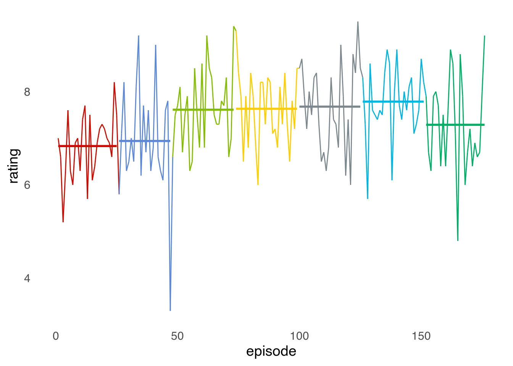
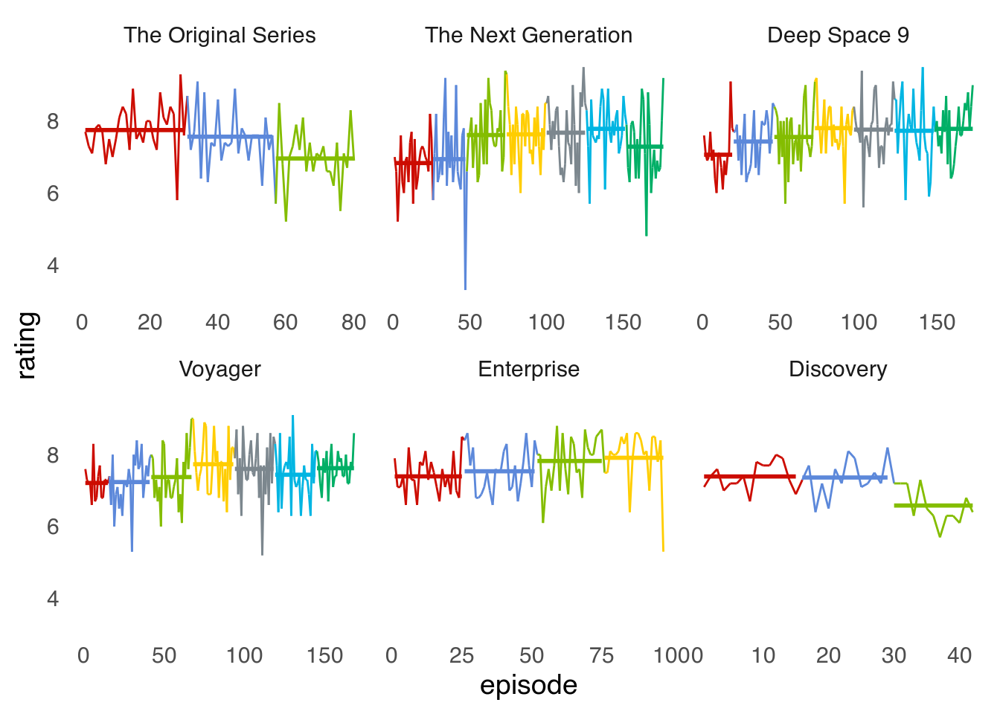
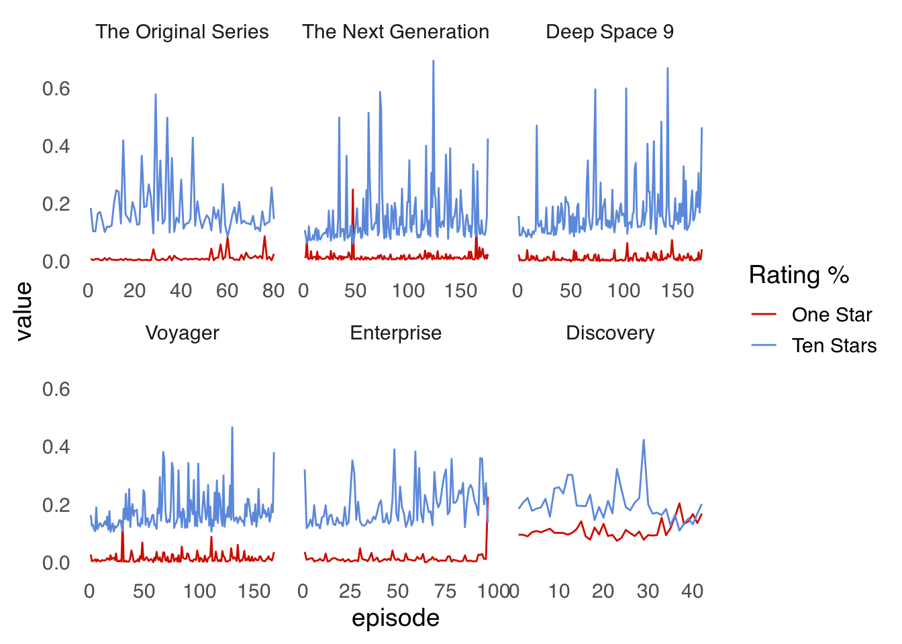
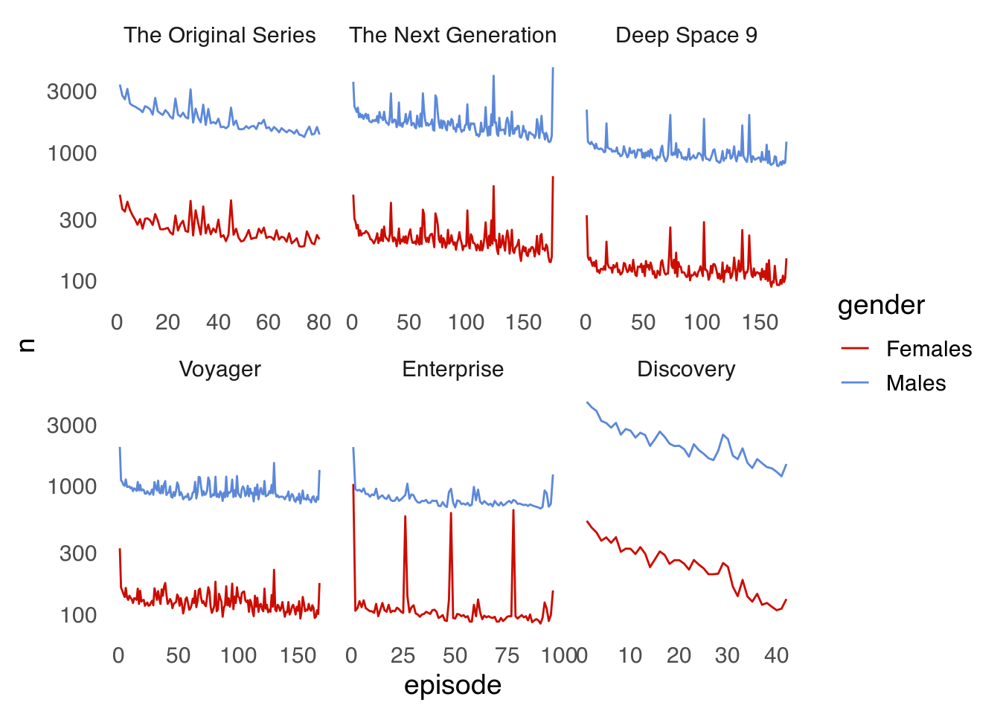
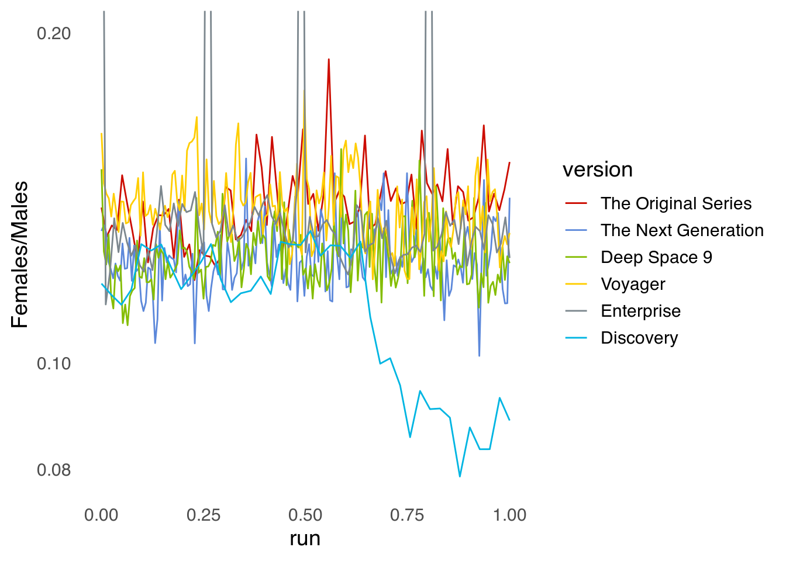
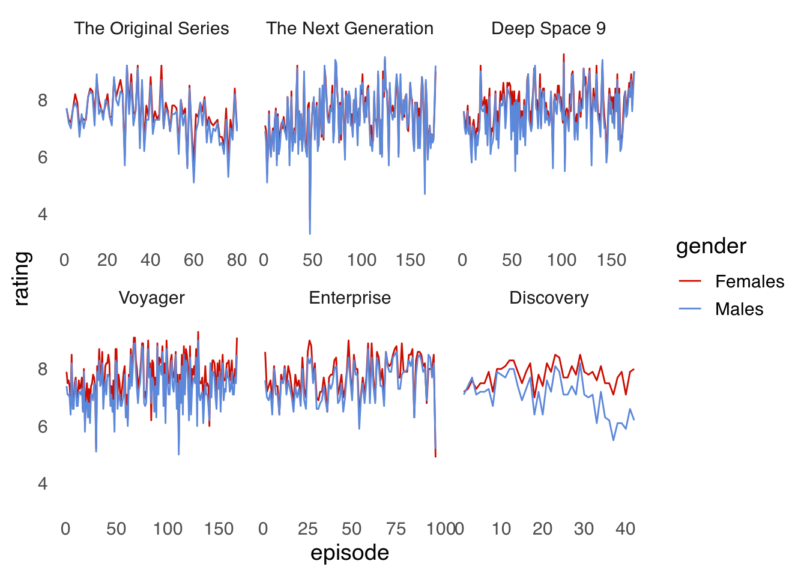
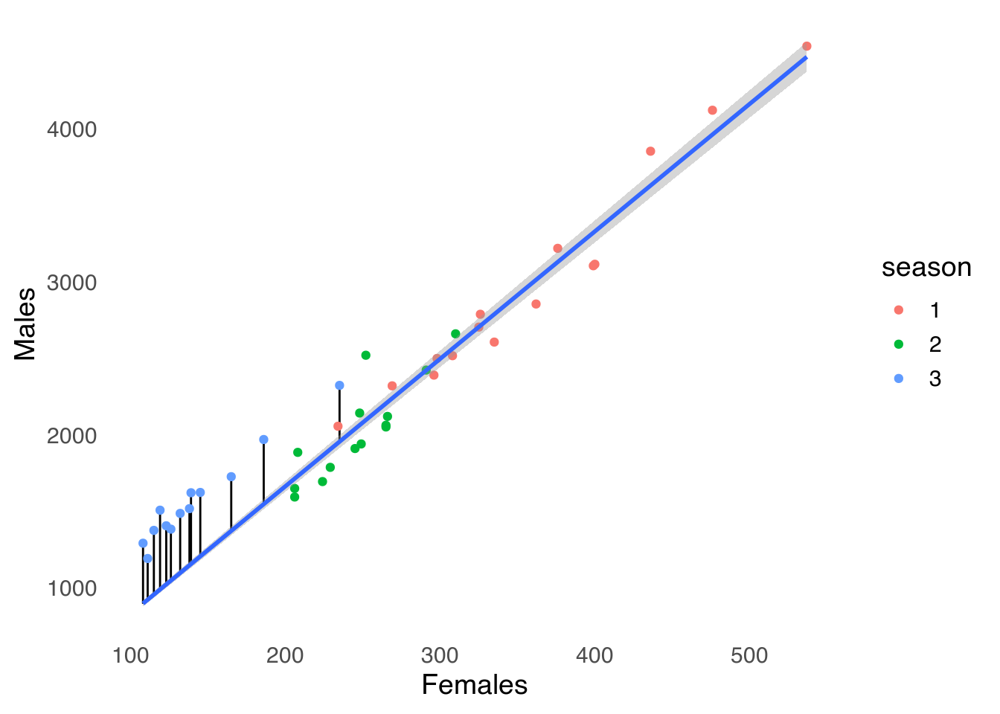

Star Trek ratings on IMDB
En español: Analizando ratings de Star Trek en IMDBMy girlfriend and I are watching Star Trek: The Next Generation (TNG). The first season it’s pretty lame, but it gets better further down the line. That piqued my curiosity – is that impression shared by the rest of The Internets? So I decided to download the rating of every TNG episode from IDMB. I quickly realised that IMDB provides much more than just mean reating, it also has the full rating histogram and also demographic breakdowns. So I decided to get those as well.
And since I was at it, why not loot also at all the Star Trek series?
Scraping the data
First, load the packages. data.table for data analysis, magrittr for cute chains, rvest to scrape and ggplot2 for visualising. ggsci is a package with many colour scales; I use it here becasue ggsci::scale_colour_trek() is the only logical choice of colour scales in this context.
library(data.table)
library(rvest)
library(magrittr)
library(ggplot2)
library(ggsci)
theme_set(theme_minimal(14) +
theme(panel.grid = element_blank()))Then, fucntions to scrape ratings. Each series has a webpage with a list of seasons. get_series() detects those links and scrapes each season with get_season()1.
get_series_ <- function(id) {
home_url <- paste0("https://www.imdb.com/title/", id)
message("Series: ", id)
seasons <- html_session(home_url) %>%
html_nodes("#title-episode-widget div:nth-child(4) a") %>%
html_text() %>%
rev()
data <- lapply(seasons, function(x) get_season(id, x))
rbindlist(data)
}
get_series <- memoise::memoise(get_series_,
cache = memoise::cache_filesystem("data/star_trek/"))Each season’s webpage has a table with every episode with its mean rating. Since I also want the detailed breakdown, the function captures the link of each episode and scrapes the detailes with get_details_episode().
get_season_ <- function(id, season) {
message("Season: ", season)
url <- paste0("https://www.imdb.com/title/", id, "/episodes?season=", season)
session <- rvest::html_session(url)
titles <- rvest::html_nodes(session, "#episodes_content strong a") %>%
html_attr("title") %>%
na.omit()
stars <- rvest::html_nodes(session, ".ipl-rating-star.small .ipl-rating-star__rating") %>%
html_text()
if (length(stars) == 0) {
return(NULL)
}
dates <- rvest::html_nodes(session, ".airdate") %>%
html_text() %>%
lubridate::dmy()
links <- html_nodes(session, "#episodes_content strong a") %>%
html_attr("href")
links <- links[links != "#void"]
ids <- strsplit(links, "/") %>%
vapply(function(x) x[3], character(1))
rating_details <- lapply(ids, get_details_episode)
data <- data.table::data.table(date = dates,
number = seq_along(titles),
title = titles,
rating = as.numeric(stars),
season = season,
details = rating_details
)
}
get_season <- memoise::memoise(get_season_,
cache = memoise::cache_filesystem("data/star_trek/"))Finally, get_details_episode() goes into each episode’s ratings and scrapes the rating distribution, the mean rating by gender and the number of ratings by gender.
get_details_episode <- function(id) {
url <- paste0("https://www.imdb.com/title/", id, "/ratings")
session <- html_session(url)
ratings <- session %>%
html_nodes("td:nth-child(3) .leftAligned") %>%
html_text() %>%
trimws() %>%
gsub(",", "", .) %>%
as.numeric()
ratings_gender <- session %>%
html_nodes("table:nth-child(11) .ratingTable:nth-child(2) .bigcell") %>%
html_text() %>%
as.numeric()
number_gender <- session %>%
html_nodes("table:nth-child(11) .ratingTable:nth-child(2) a") %>%
html_text() %>%
trimws() %>%
gsub(",", "", .) %>%
as.numeric()
data.table::data.table(gender = list(data.table::data.table(gender = c("All", "Males", "Females"),
rating = ratings_gender,
N = number_gender)),
ratings = list(data.table::data.table(rating = 10:1,
N = ratings))
)
}The final step is manually searching the id of each series of Star Trek.
star_treks <- c(tos = "tt0060028",
tng = "tt0092455",
ds9 = "tt0106145",
voyager = "tt0112178",
enterprise = "tt0244365",
discovery = "tt5171438"
)
labs_st <- setNames(
c("The Original Series",
"The Next Generation",
"Deep Space 9",
"Voyager",
"Enterprise",
"Discovery"),
names(star_treks))I apply get_series() to each one and combine the results row-wise with data.table::rbindlist().
data <- lapply(star_treks, get_series) %>%
rbindlist(idcol = "version") %>%
.[, episode := 1:.N, by = version] %>%
.[, version := factor(version, levels = names(star_treks), ordered = TRUE)]Here’s what the data looks like:
head(data)## version date number title rating season
## 1: tos 1988-11-27 1 The Cage 7.7 1
## 2: tos 1966-09-08 2 The Man Trap 7.3 1
## 3: tos 1966-09-15 3 Charlie X 7.1 1
## 4: tos 1966-09-22 4 Where No Man Has Gone Before 7.8 1
## 5: tos 1966-09-29 5 The Naked Time 7.9 1
## 6: tos 1966-10-06 6 The Enemy Within 7.7 1
## details episode
## 1: <data.table[1x2]> 1
## 2: <data.table[1x2]> 2
## 3: <data.table[1x2]> 3
## 4: <data.table[1x2]> 4
## 5: <data.table[1x2]> 5
## 6: <data.table[1x2]> 6Each row is an episode, which has the version of Star Trek that it belongs to, the emission date and other data. So far so good. It gets a bit more tricky with the column details.
data[1, ]$details[[1]]## gender ratings
## 1: <data.table[3x3]> <data.table[10x2]>Each row contains a list that itself contains two tables, “gender” and “ratings”. The “gender” table has the mean rating and number of ratings by gender.
data[1, ]$details[[1]]$gender[[1]]## gender rating N
## 1: All 7.7 5344
## 2: Males 7.7 3390
## 3: Females 7.7 470The “ratings” table contains the number of ratings for each numeric rating.
data[1, ]$details[[1]]$ratings[[1]]## rating N
## 1: 10 991
## 2: 9 644
## 3: 8 1447
## 4: 7 1271
## 5: 6 577
## 6: 5 220
## 7: 4 73
## 8: 3 40
## 9: 2 32
## 10: 1 49This nested table format is a bit complicated at first, but it’s pretty much the natural choice for these sort of data.
Analysing the data
Now that I have all these data, the first thing I want to answer is the original question. How did the public perception of The Next Generation changed for each season?
data[version == "tng"] %>%
ggplot(aes(episode, rating)) +
geom_line(aes(color = season, group = 1)) +
geom_line(data = function(x) copy(x)[, rating := mean(rating), by = season],
aes(color = season), size = 1) +
scale_color_startrek(guide = "none")
(Did you catch the small trick in the second geom_line() call? If the dataargument inside geoms is a function, then the data plotted by the geom will be the result of applying that function to the “global” dataframe defined in the ggplot() call. In this case, it replaces each episode’s rating which the mean rating of the corresponding season).
The effect is pretty clear. The first two seasons rated rather mediocrely and the show achieved it’s glory only after the third season. After that, the show’s reception is more or less stable, with a slight setback in the seventh and final season. As I translate this from the Spanish version, we are on the beginning of the last season and I can confirm that seasons 3 through 6 where quite solid.
The last episode of the second season jumps out from the screen due to its dreadful reception. And with good reason. For cost-saving reasons, the show producers decided to end the second season with a dreadful clipshow! It’s amazing that the show went on after such terrible season finale.
How does TNG’s ratings compare with the rest of the Star Trek catalogue?
data %>%
ggplot(aes(episode, rating)) +
geom_line(aes(color = season, group = 1)) +
geom_line(data = function(x) copy(x)[, rating := mean(rating), by = .(version, season)],
aes(color = season), size = 1) +
scale_color_startrek(guide = "none") +
facet_wrap(~version, scales = "free_x", labeller = labeller(version = labs_st))
It seems like Star Trek, like fine wine, commonly gets better with time. Besides TNG, Deep Space 9, Voyager and Enterprise, they all reached their potential only after a few relatively rocky seasons. The Original Series and Discovery are the exceptions. Both series have only three seasons, and in both series, the third season was the worst rated.
But, are the fall of Discovery the same as the fall of The Original Series? I’ve seen Discovery’s third season and I didn’t think it was that much worse than the other two. Also, because I live in this century, not only makes me run away screaming from the slow episodes of The Original Series, but also allowed me to experience the popular reaction to Discovery. I know it fell victim of the extreme polarisation that characterises our era.
A clear symptom of this polarisation is the huge difference between critic reception and audience scores. In Rotten Tomatoes, Discovery’s third season is actually the best rated of the three, with a 90% positive score, even though the audience score is a low 46%. Same goes for Metacritic: the critic mean score – 7.3 – is much higher than the user score – 3.8.
This is commonly seen when a movie or show offends some subgroup’s sensibilities. Suddenly, you get thousands of trolls rating 1 star en masse. This can be clearly seen by plotting the proportion of 1s and 10s for each episode.
data[, details[[1]]$ratings[[1]], by = .(version, season, episode, number)] %>%
.[, .(one_star = N[rating == 1]/sum(N),
ten_star = N[rating == 10]/sum(N)), by = .(episode, version)] %>%
melt(id.vars = c("episode", "version")) %>%
ggplot(aes(episode, value)) +
geom_line(aes(color = variable)) +
scale_color_startrek(name = "Rating %", labels = c(one_star = "One Star",
ten_star = "Ten Stars")) +
facet_wrap(~version, scales = "free_x", labeller = labeller(version = labs_st))
Save some exceptions, no episode of the old shows has an appreciable proportion of ones. Discovery, on the other hand, consistently has a ~10% of low ratings. In the last episodes, they even outnumber the tens.
An interesting piece of data in the IMDB website is the breakdown by gender. Sci-fi sadly tends to be a genre dominated by the male gender. Is that reflected in the amount of user ratings?
data %>%
.[, details[[1]]$gender[[1]] , by = .(version, season, episode, number)] %>%
.[gender != "All"] %>%
.[, .(n = sum(N)), by = .(episode, version, gender)] %>%
ggplot(aes(episode, n)) +
geom_line(aes(color = gender)) +
scale_color_startrek() +
scale_y_log10() +
facet_wrap(~version, scales = "free_x", labeller = labeller(version = labs_st))
Most definitely! There are so few ratings by women that I had to use a logarithmic scale; otherwise the red line would’ve been almost indistinguishable from zero.
Interestingly, for every Star Trek and for both genders reported by IMDB there’s a clear tendency of fewer ratings as the episodes progress. I’d wager this is a survivorship effect. Many people begin watching each show from the first episode and register their rating and eventually they get bored and give up. It’s therefore natural that there’s simply more people who watched and are willing to rate the first episodes than the later ones.
With respect to the gender distribution, the ratio of ratings seems to be more or less stable, with the obvious exception of four episodes from Enterprise which have almost as many female as male ratings.
These are the 10 episodes with the greatest proportion of female ratings:
data %>%
.[, details[[1]]$gender[[1]] , by = .(version, season, episode, number)] %>%
.[gender != "All"] %>%
.[, .(n = sum(N)), by = .(episode, version, gender)] %>%
dcast(episode + version ~ gender, value.var = "n") %>%
.[, ratio := Females/Males] %>%
data[., on = .NATURAL] %>%
.[order(-ratio)] %>%
.[1:10] %>%
.[, .(version, season, number, title, rating, ratio = scales::percent(ratio, accuracy = 0.1))] %>%
knitr::kable()| version | season | number | title | rating | ratio |
|---|---|---|---|---|---|
| enterprise | 4 | 3 | Home | 8.1 | 83.5% |
| enterprise | 2 | 1 | Shockwave, Part II | 8.4 | 68.3% |
| enterprise | 2 | 23 | Regeneration | 8.6 | 64.7% |
| enterprise | 1 | 1 | Broken Bow | 7.9 | 51.6% |
| tos | 2 | 15 | The Trouble with Tribbles | 8.9 | 18.9% |
| voyager | 4 | 17 | Retrospect | 6.8 | 17.7% |
| voyager | 2 | 25 | Resolutions | 7.4 | 16.8% |
| voyager | 3 | 16 | Blood Fever | 7.3 | 16.5% |
| tos | 3 | 19 | Requiem for Methuselah | 7.4 | 16.5% |
| tos | 2 | 10 | Journey to Babel | 8.6 | 16.3% |
I’ve never seen Enterprise so I have absolutely no idea if there’s anything special about those four episodes which seem to be uncharacteristically popular with women.
Still, it’s not easy to compare the ratio of ratings by men and women in the previous figure, so it’s better to just plot that variable.¡
data %>%
.[, details[[1]]$gender[[1]] , by = .(version, season, episode, number)] %>%
.[gender != "All"] %>%
.[, .(n = sum(N)), by = .(episode, version, gender)] %>%
dcast(episode + version ~ gender, value.var = "n") %>%
.[, run := scales::rescale(episode, to = c(0, 1)), by = version] %>%
ggplot(aes(run, Females/Males)) +
geom_line(aes(color = version)) +
scale_y_log10() +
scale_color_startrek( labels = labs_st) +
coord_cartesian(ylim = c(NA, 0.2)) 
Beside those Enterprise peaks, what’s more salient is the brutal drop in the proportion of female ratings towards the last season of Discovery. What happened there? My hypothesis is that men where overrepresented in the the troll horde that attacked Discovery.
Setting aside those four episodes of Enterprise, The Original Series and Voyager are neck to neck as the shows with the greatest overall proportion of female ratings. The differences are not huge, though, and to the extent that IDMB ratings are representative of the overall Star Trek audience, about 80% of the viewers are male.
So men rate more episode than women, is there a difference in the mean score?
data %>%
.[, details[[1]]$gender[[1]] , by = .(version, season, episode, number)] %>%
.[gender != "All"] %>%
ggplot(aes(episode, rating)) +
geom_line(aes(color = gender)) +
scale_color_startrek() +
facet_wrap(~version, scales = "free_x", labeller = labeller(version = labs_st))
Yes, but not much. In general, women tend to score episodes with higher ratings. This might be a selection bias effect. Start Trek is a show generally marketed towards men, so the few women who watch the series and take the time to go to IMDB to rate it are a self selected group who might like the show more than the average viewer. Strangely to me, women don’t seem to score particularly high those episodes of Enterprise particularly popular with women.
Discovery is, again, a clear outlier. The mean score difference between genders reported by IMDB is a bit higher at the start of the series and it widens dramatically in its final season. Women scores tended to be reactively constant, but men appear to not have liked that season at all. This is consistent with my “male trolls” hypothesis.
To somehow quantify this “troll effect”, I’ll use the fact that women’s ratings remained constant both in amount and mean score. Assuming then that this subpopulation of users behaved the same during the whole run of the show, I’ll use it as a predictor to predict the amount of ratings by men. This will serve as a first approximation of the number of “extra” ratings.
discovery_ratings <- data %>%
.[, details[[1]]$gender[[1]] , by = .(version, season, episode, number)] %>%
# .[gender != "All"] %>%
.[, .(n = sum(N)), by = .(episode, version, season, gender)] %>%
.[version == "discovery"] %>%
dcast(version + episode + season ~ gender, value.var = "n")
model <- discovery_ratings %>%
.[episode <= 20] %>%
lm(Males ~ Females-1, data = .)
discovery_ratings[, predicted := predict(model, newdata = discovery_ratings)]
extra <- discovery_ratings %>%
.[, .(Males = sum(Males),
Females = sum(Females),
predicted = sum(predicted)), by = .(version, season)]
discovery_ratings %>%
ggplot(aes(Females, Males)) +
geom_segment(data = ~.x[season == 3], aes(xend = Females, yend = predicted)) +
geom_point(aes(color = season)) +
# geom_line(aes(color = season, y = predicted)) +
geom_smooth(method = "lm", formula = y ~ x-1, data = ~.x[episode < 20], fullrange = TRUE)
Those blue dots above the line represent the extra ratings by men during the third season. In total they sum to 5138 ratings, which translate to about 25% of all male ratings.
Note that I use
memomiseto cache the results. This is great to speed up the iterative development of these functions and also to annoy IMDB a little less.↩︎